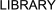

|

Chemical Information
- ChemFinder chemical search by Chemical Name, CAS Number, Molecular Formula or substructure using ChemDraw plugin (in the software section).
Login information:
Username: StrataInfo@stratatox.com
Password: StrataTox4@))*
- ChemExpert: chemical search by CAS, Name, Substructure, provides physico/chemical characteristics and suppliers.
- ChemIDplus Dictionary of over 370,000 chemicals (names, synonyms, and structures). Includes links to NLM and other databases and resources.
- Substance Registry System: chemical search by CAS, Name.
- Sigma Aldrich, MPBio, TCI America, LKT Labs, City Chemical, Pfaltzandbauer - laboratury chemical suppliers
Physico chemical properties
- Syracuse Research Corporation LOGKOW / KOWWIN LogP estimation
- BioByte CLOG LogP estimation using Bio-Loom (see softwares section
- NIST Chemistry WebBook phase change data, Henry's Law, Vapor Pressure
- MatWeb, Your Source for Materials Information
Login information:
UserID: StrataInfo@stratatox.com
Password: StrataTox
- OSIRIS Property Explorer realtime cLogP, solubility
- IUPAC-NIST Solubility Database Mutual solubilities and liquid-liquid equilibria of binary, ternary and quaternary systems are presented.
- Handbook of Chemistry and Physics - online book
Safety Assessment
- Permissible Exposure Limits (PELs)
- TABLE Z-1 Limits for Air Contaminants. - 1910.1000 TABLE Z-1
- TABLE Z-2 - 1910.1000 TABLE Z-2
- TABLE Z-3 Mineral Dusts - 1910.1000 TABLE Z-3
- NIOSH Pocket Guide to Chemical Hazards
- NIOSH Criteria Documents
- Documentation for Immediately Dangerous to Life or Health Concentrations (IDLH)
- International Chemical Safety Cards (ICSCs): International Programme on Chemical Safety
- Occupational Health Guidelines for Chemical Hazards
- 988 OSHA PEL Project Documentation
- NTP Report on Carcinogens (RoC)
- International Agency for Research on Cancer Complete List of Agents evaluated and their classification
- TOXNET Toxicology data network
- Hazardous Substances Data Bank (HSDB) Comprehensive, peer-reviewed toxicology data for about 5,000 chemicals.
- Toxicology Literature Online (TOXLINE) References from toxicology literature.
- NLM Environmental health & toxicology portal
- Chemical Carcinogenesis Research Information System (CCRIS) Carcinogenicity and mutagenicity test results for over 8,000 chemicals.
- Developmental and Reproductive Toxicology Database (DART) References to developmental and reproductive toxicology literature.
- Genetic Toxicology Data Bank (GENE-TOX) Peer-reviewed genetic toxicology test data for over 3,000 chemicals.
- Integrated Risk Information System (IRIS) Hazard identification and dose-response assessments for over 500 chemicals.
- International Toxicity Estimates for Risk (ITER) Risk information for over 600 chemicals from authoritative groups worldwide.
Databases
- Material safety data search
- Agency for Toxic Substances and Disease Registry
- Distributed Structure-Searchable Toxicity (DSSTox) Database Network
- ECOTOX Database
- Solvent DB
Software
- (Q)SAR Application Toolbox estimates properties of a chemical from its molecular structure and have the potential to provide information on hazards of chemicals
- Estimation Program Interface (EPI) Suite - a suite of physical/chemical property and environmental fate estimation models developed by the EPA’s Office of Pollution Prevention Toxics and Syracuse Research Corporation (SRC). EPI Suite™ uses a single input to run the following estimation models: KOWWIN™, AOPWIN™, HENRYWIN™, MPBPWIN™, BIOWIN™, BioHCWIN, PCKOCWIN™, WSKOWWIN™, WATERNT™, BCFWIN™, HYDROWIN™, KOAWIN and AEROWIN™, and the fate models STPWIN™, WVOLWIN™, and LEV3EPI™
- ACD/ChemSketch 11.0 Chemical structure-drawing software that can generate Smiles, InChi, IUPAC Chemical name
- SciFinder Scholar Requires Virtual Private Network (VPN) for off campus access
- Bio-Loom calculates partition coefficient LogKOW and access BioByte's entire Thor Masterfile database of chemical properties as well as the QSAR database of Hansch equations
Other Documents
- Fundamental Physical Constants, Table
- Unit Conversion
- Rolf Sander (2002). Compilation of Henry’s Law Constants for Inorganic and
Organic Species of Potential Importance in Environmental
Chemistry, Air Chemistry Department
Max-Planck Institute of Chemistry
PO Box 3060
55020 Mainz
Germany.
REACH Documentation
- REACH Guidance Documents
|
|
|